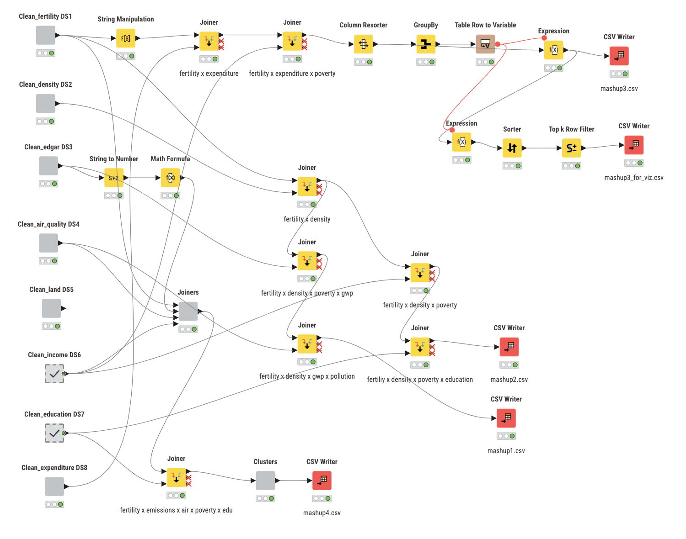
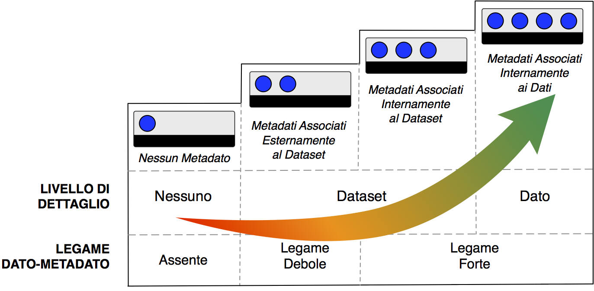

About the project
No one really calls us Generation Zero — we came up with that. Not because we’re leading the charge on zero emissions (though we’re told we should), but because all the zeros seem to be stacking up in the wrong places: zero births, zero savings, zero structural support.
Fertility is plummeting across Europe, particularly in regions where income is low, education is high, and gender inequalities persist. Female employment rises, but so does unpaid care work.
Public investment in families, housing, and healthcare? Still not catching up. We're not just reducing CO₂ — we’re reducing futures. Generation Zero is our attempt to reframe the story.
A data-driven exploration of Europe’s declining birth rates between 2017 and 2019, this project investigates how structural factors — like environmental pollution, income distribution, and public health spending — shape reproductive choices across EU countries.
- Fertility rates (total and age-specific)
- Household income & GINI index(???)
- Air quality (PM2.5 exposure)
- Government health expenditure
The selected timespan (2017–2019), captures recent pre-pandemic trends with consistent, harmonised data. The analysis spans EU member states where data is complete and comparable. This project combines statistical analysis with ethical reflection to explore the deeper reasons behind Europe’s so-called “baby bust.”
download
Full detailed documentation is freely downloadable by the user.
Scenario
Between 2017 and 2019, fertility rates across Europe continued their steady decline, with many countries falling below replacement level. While social debates often frame birth rate drops as matters of personal preference or “generational values,” the data suggest deeper systemic factors at play.
In cities with high air pollution, rural regions with low access to care, and countries with limited public investment in health and family support, reproductive choices appear constrained. Economic uncertainty, environmental exposure, and unequal healthcare coverage intersect to shape if, when, and how people decide to start families.
Generation Zero uses comparative open data to surface these intersections and challenge simplistic explanations. It asks whether Europe's demographic shift is the result of free choice—or the consequence of environments and systems that make choosing parenthood increasingly difficult.
RESEARCH QUESTIONS
- Where in Europe is reproduction environmentally discouraged?
- Is fertility still a privilege of poverty?
- How does urbanisation shape fertility in Europe?
- Is there a mismatch between where fertility is highest and where public family investment is focused?
- What are the spatial conditions of reproductive freedom?

Datasets, between source ones and mashup ones, used to answer the research question
Pregnancies in the female population aged 15-25 during the year span 2017-2019 in Italy
Thousands religion followers in the year span 2017-2019 in Italy
Early leavers from higher education in the female population aged 18-24 during the year span 2017-2019 in Italy
Source and mashup datasets
This project uses a comparative, multi-variable approach to investigate the structural conditions shaping fertility across Europe between 2017 and 2019. Drawing exclusively from open access datasets, the study combines demographic indicators with environmental, economic, and healthcare-related variables to map potential correlations and disparities.
The analysis is conducted at the NUTS2 regional level, allowing for detailed spatial comparison within and across EU member states. All datasets were selected based on their completeness, open licensing, and temporal consistency.
Once collected, all datasets were:
- Cleaned and filtered to ensure reliability
- Harmonised by year to match the selected temporal window (2017–2019)
- Joined using standard geographic codes (NUTS2 for regional data, NUTS0 when aggregating with national-level indicators)
The variables were then grouped into thematic mashup datasets, each addressing a specific research question. These mashups were created through structured join operations and further processed with KNIME workflows and Python notebooks.
The goal was not only to observe correlations, but also to highlight disparities and patterns of structural vulnerability that may affect reproductive behaviour.
This integrative and reproducible method allows us to combine demographic, environmental, socioeconomic, and policy-related variables into a unified analytical framework — turning fragmented open data into interpretable insight.
Each mashup dataset is directly aligned with a specific research question, serving as the analytical foundation for both statistical modelling and visual storytelling. By structuring the data around thematic hypotheses, we enable targeted, multidimensional insights into the drivers of fertility decline.
Full processing documentation and reproducible workflows — including data cleaning, integration, and transformation steps — are available in the project’s GitHub repository, ensuring transparency and methodological traceability.
- All
- Source datasets
- Mashup datasets
DS1 - Fertility Rates
ID: DS1
Provenience: National Statistics Office
Format: .csv, .xlsx
Metadata: Provided
URI: FertilityData
License: CC BY 4.0
DS2 - Population Density
ID: DS2
Provenience: National Statistics Office
Format: .csv, .xlsx
Metadata: Provided
URI: DensityData
License: CC BY 4.0
DS3 - Industrial Emissions
ID: DS3
Provenience: Environmental Agency
Format: .csv, .json
Metadata: Provided
URI: EmissionsData
License: CC BY 4.0
DS4 - Air Quality
ID: DS4
Provenience: Environmental Agency
Format: .csv, .json
Metadata: Provided
URI: AirQualityData
License: CC BY 4.0
DS5 - Land Cover
ID: DS5
Provenience: Environmental Agency
Format: .geojson, .shp
Metadata: Provided
URI: LandCoverData
License: CC BY 4.0
DS6 - Income & Poverty
ID: DS6
Provenience: National Statistics Office
Format: .csv, .xlsx
Metadata: Provided
URI: IncomeData
License: CC BY 4.0
DS7 - Education
ID: DS7
Provenience: Education Ministry
Format: .csv, .xlsx
Metadata: Provided
URI: EducationData
License: CC BY 4.0
DS8 - Family Expenditure
ID: DS8
Provenience: Social Affairs Ministry
Format: .csv, .xlsx
Metadata: Provided
URI: FamilyPolicyData
License: CC BY 4.0
Processing of data
The source datasets were processed using KNIME software, a powerful platform for data analytics and workflow automation. Various operations were carried out to clean, preprocess, and mash up the data, ensuring that it was structured and ready for analysis. These operations included data cleansing steps such as handling missing values, standardizing formats, and removing duplicates, as well as combining multiple data sources to create the mashup dataset.
The workflow of the project, which outlines each step of the data transformation process, is available for consultation in the image below, providing full transparency and enabling replication of the analysis.

Additionally, the full KNIME workflow can be downloaded here, allowing users to access the cleaned and integrated data for their own analysis or research purposes.
Results
Click on a year to find out the specific results!
Results for year 2017
Religious observance rates
Highest rate: Puglia 32.9%
Lowest rate: Liguria 16.3%
Pregnancy rates
Highest rate: Sicilia 4.8%
Lowest rate: Basilicata 2.5%
Education leavers rates
Highest rate: Campania 9.1%
Lowest rate: Marche 2.6%
Bar chart
Results for year 2018
Religious observance rates
Highest rate: Calabria 15.7%
Lowest rate: Sardegna 2.8%
Pregnancy rates
Highest rate: Sicilia 2.4%
Lowest rate: Marche 0.4%
Education leavers rates
Highest rate: Sicilia 10.6%
Lowest rate: Marche / Friuli-Venezia Giulia 3.5%
Bar chart
Results for year 2019
Religious observance rates
Highest rate: Campania 15.8%
Lowest rate: Liguria 7.9%
Pregnancy rates
Highest rate: Sicilia 2.5%
Lowest rate: Basilicata 1.3%
Education leavers rates
Highest rate: Sicilia 10.3%
Lowest rate: Abruzzo 2.1%
Bar chart
Our main visualizations:
choropleth maps
We decided to provide choropleth maps as they were the best option to visualize individually the variation
of our data over our geographical area of interest,
as well as to visually highlight similarities in our variables trends.
Please note that:
- Religious observance percentage rates are calculated over the general population without distinction in gender or age class
- Pregnancy percentage rates are calculated over a sample population of women belonging to an age class of 15-24
- Education leavers percentage rates are caluculated over a sample population of women belonging to an age class of 18-24
bar chart
The bar chart visualization was included as well, since it offers us an immediate and clear comparison between values of each of our variables.
conclusions
For a further evaluation of our analysis, we can likely state that we don't have enough data to know if a variable - and in that case which one - causes the other.
For example, we could hypothesize that the early leavers rate is indeed affected by the early pregnancy rates, since being pregnant could be a reason for a young woman to choose to leave education or training. To affirm this, however, we would need to look into other possible correlated factors, such as poverty rates, to make sure they are not strongly affecting our data.
For the same reason, we can't possibly infer causality between religious rates and our other variables: even though they do seem to vary together, there's no mean for us to tell whether religiosity is the reason one is inclined to leave education and start a family early in life, or whether, after this happens, people are inclined to move their sociality from educational contests to religious contests. Just to give some examples of possible reasons of correlation.
Furthermore, to properly assess the connection between religiosity and pregnancies, with specific differentiation amongst induced abortions and live births, for instance, we would need much more data about how religiosity affects women's access to Voluntary Termination of Pregnancy (VTP, in Italian "Interruzione Volontaria di Gravidanza", IVG) in the first place. As we know, Italy has a very high rate of coscientious objectors (in 2012: 69,6% of gynecologists, 47,5% of anesthetists and 45% of non medical staff [source]).
This could significantly affect the pregnancy rates per region, as they have been counted including abortions in the place where they happen and not according to the woman's residency. It goes without saying, if a region prevents a woman to access VTP they might be likely to migrate to other region, hence, this phenomenon might also have affected our data. Unfortunately, there are very few and non-institutional data about the phenomenon and this prevented us to futherly investigate the degree of its impact on our study.
Finally, to highlight other features related to our variables and illustrate trends and other interesting information, you can have a look at our in the "Additional Visualizations" section. There, we provided:
- bubble charts for every year to investigate and better visualize how much our variables are correlated together,
- pie charts for pregnancies data, in order to better understand the rates of the different outcomes of pregnancies,
- time series for each reason, in order to better investigate how our values changed over the three year span we analyzed.
Analyses
The 8(?) source datasets have been analysed for four aspects.
Quality analysis
Following EU Open Data Maturity Report and Italian AgID guidelines with four dimensions: accuracy, completeness, coherence and timeliness.
Legal Analysis
To evaluate potential risks and imbalances related to the long-term sustainability of data generation and dissemination, focusing on areas such as privacy, intellectual property rights, licensing for release, restrictions on public access, economic factors, and other temporal considerations.
Ethical Analysis
Evaluating the ethical aspects of the datasets using the Data Ethics Principles and Guidelines: human being at the centre, transparency, accountability, and individual data protection.
Technical Analysis
On the metadata provided by Istat and other possible information on the datasets: format, provenance, IRI. Moreover, an RDF assertion and metadata for the mashup datasets and an analysis of the project from the perspective of the FAIR principles.
Quality analysis
This assessment evaluates the quality of the datasets based on four core dimensions drawn from the EU Open Data Maturity Report and Italian AgID guidelines. All core datasets (DS1-DS9) were selected for their high-level official provenance (Eurostat, EEA, EDGAR, WHO), open licensing (CC BY 4.0), and availability in machine-readable formats.
3.1 Summary Table
| Dataset ID | Accuracy | Completeness | Timeliness | Coherence | Quality Level |
|---|---|---|---|---|---|
| DS1: Fertility (TFR, Eurostat) | High (official source) | Full 2000-2023 | Updated in 2024 | Consistent NUTS2 | 4 |
| DS2: Population Density (Eurostat) | High | 2000-2023 | Yearly updates | Matches NUTS2 | 4 |
| DS3: Emissions (EDGAR/E-PRTR) | Mixed methods | Annual totals | EDGAR up to 2024 | Source inconsistencies | 3.5-4 |
| DS4: Air Quality (EEA) | Aligned with WHO | Modelled means since 2020 | Until 2022 | Clean NUTS2 mapping | 3.5-4 |
| DS5: Land Cover (Eurostat) | Geostat-validated | 2009-2018 | Not updated after 2018 | Harmonised geo-codes | 3 |
| DS6: Income & Poverty (Eurostat) | Statistically robust | 2015-2024 | Updated in 2024 | Same scale as DS1 | 4 |
| DS7: Education (Eurostat) | Standardised methodology | Annual NUTS2 data | Up to 2024 | Fully coherent | 4 |
| DS8: Welfare Expenditure (Eurostat) | High-level official stats | National aggregates | Covers 2000-2023 | Resolution mismatch | 3 |
| DS9: Natality by age (Eurostat) | Based on vital records | Covers 2000-2023 | Updated and detailed | NUTS2 alignment | 4 |
3.2 Key Observations by Quality Dimension
Accuracy
- Most datasets are produced by Eurostat, EEA, or EDGAR, ensuring statistical validity
- DS3 includes modelled emissions (EDGAR) which may introduce methodological variation
- Harmonised NUTS2 aggregations mitigate potential accuracy issues
Completeness
- Datasets span multiple decades (2000-2023) with full temporal coverage
- DS5 (land cover) ends in 2018 - requires contextual justification if used
- NUTS2 geographic coverage is comprehensive across all regional datasets
Timeliness
- Fertility, income, education updated as of 2024
- Environmental datasets (DS4, DS5) have slight lags but acceptable for analysis
- All updates clearly timestamped in metadata
Coherence
- All regional datasets use NUTS2 geo-codes for seamless integration
- Country-level variables (DS8) treated as context indicators
- No direct merging of different resolution data at row level
3.3 Licensing and Format
Data provided in machine-readable formats: CSV, RDF, XML, SDMX.
Documentation offers unified FAIR-compliant summary.
3.4 Final Evaluation
| Dimension | Evaluation |
|---|---|
| Accuracy | High (validated official sources) |
| Completeness | High for most datasets; minor limitations acknowledged |
| Timeliness | Generally current (2022-2024), some environmental lags |
| Coherence | Excellent alignment via NUTS2 geo-keys and harmonised formats |
| Overall Level | ≥ 3.5/4 (High-quality open data, ready for ethical reuse and RDF conversion) |
Legal Analysis – Reproduce for Whom?
The legal analysis ensures that all datasets used and produced within “Reproduce for Whom?” comply with European and national legal frameworks. This includes data protection (GDPR), intellectual property rights (IPR), open licensing, and reuse limitations.
The evaluation follows six legal dimensions: Privacy Issues, Intellectual Property Rights, Licenses, Limitations on Public Access, Economical Conditions, and Temporal Aspects.
4.1 Privacy Issues Checklist
| Question | DS1 | DS2 | DS3 | DS4 | DS5 | DS6 | DS7 | DS8 | DS9 |
|---|---|---|---|---|---|---|---|---|---|
| Is the dataset free of personal data (Reg. 2016/679)? | ✅ | ✅ | ✅ | ✅ | ✅ | ✅ | ✅ | ✅ | ✅ |
| Free of indirect identifiers (e.g., small geo groups)? | ✅ | ✅ | ✅ | ✅ | ✅ | ✅ | ✅ | ✅ | ✅ |
| Free of special categories (Art. 9 GDPR)? | ✅ | ✅ | ✅ | ✅ | ✅ | ✅ | ✅ | ✅ | ✅ |
| Free of data combinable for re-identification? | ✅ | ✅ | ✅ | ✅ | ✅ | ✅ | ✅ | ✅ | ✅ |
| Free of vulnerable populations info? | ✅ | ✅ | ✅ | ✅ | ✅ | ✅ | ✅ | ✅ | ✅ |
| Risk of de-anonymization assessed? | Not needed | Not needed | Not needed | Not needed | Not needed | Not needed | Not needed | Not needed | Not needed |
| Use of geolocation data? | ✅ NUTS2 | ✅ NUTS2 | ✅ NUTS2 | ✅ NUTS2 | ✅ NUTS2 | ✅ NUTS2 | ✅ NUTS2 | ❌ (national) | ✅ NUTS2 |
| Privacy compliance of data source platform? | ✅ | ✅ | ✅ | ✅ | ✅ | ✅ | ✅ | ✅ | ✅ |
| Known data controller/processor? | Eurostat | Eurostat | EEA / JRC | EEA | Eurostat | Eurostat | Eurostat | Eurostat | Eurostat |
| Data stored under EU jurisdiction? | ✅ | ✅ | ✅ | ✅ | ✅ | ✅ | ✅ | ✅ | ✅ |
| Only non-personal data? | ✅ | ✅ | ✅ | ✅ | ✅ | ✅ | ✅ | ✅ | ✅ |
4.2 Intellectual Property Rights (IPR)
| Question | DS1–DS9 |
|---|---|
| Owned or published by a public authority? | ✅ Eurostat, EEA, WHO |
| Dataset is original or derived work? | Original compilations |
| Subject to sui generis database rights? | ✅ |
| Need to attribute source under IPR? | ✅ (via CC BY) |
| Use compliant with EU Directive 96/9/EC? | ✅ |
4.3 Licenses
| Dataset | Original License | Type | Reuse Allowed | Attribution Required |
|---|---|---|---|---|
| DS1–DS9 | CC BY 4.0 | Open | ✅ Yes | ✅ Yes |
4.4 Limitations on Public Access
| Dataset | Freely Available | Requires Login | Access Delays | Download Format |
|---|---|---|---|---|
| DS1–DS9 | ✅ Yes | ❌ No | ❌ No | CSV / XML / RDF |
4.5 Economical Conditions
| Dataset | Free of Charge | Commercial Use Allowed |
|---|---|---|
| DS1–DS9 | ✅ Yes | ✅ Yes (via CC BY) |
4.6 Temporal Aspects
| Dataset | Year Coverage | Last Update | Update Frequency | Archived / Persistent |
|---|---|---|---|---|
| DS1 | 2000–2023 | 2024 | Annual | ✅ Yes |
| DS5 | 2009–2018 | 2019 | ❌ No | ✅ Yes |
| Others | 2000–2023 | 2024 | Annual | ✅ Yes |
4.7 Publication License of Final Mashups
| Mashup Dataset | Source Licenses | Final License |
|---|---|---|
| M1: Fertility × Pollution | CC BY 4.0 + CC BY 4.0 | CC BY 4.0 |
| M2: Fertility × Income/Education | CC BY 4.0 + CC BY 4.0 | CC BY 4.0 |
| M3: Fertility × Welfare Policy | CC BY 4.0 + CC BY 4.0 | CC BY 4.0 |
| M4: Composite Regional Index | CC BY 4.0 (all) | CC BY 4.0 |
Ethical Analysis
The ethical analysis of the project “Reproduce for Whom?” focuses on how data is collected, represented, combined, and interpreted in ways that respect individuals, communities, and public responsibilities. Inspired by the ODI Data Ethics Canvas and aligned with the European ethical framework for open data use, this analysis identifies key risks and mitigation strategies.
Purpose & Social Value
The project investigates structural injustices in reproduction across Europe. It aims to highlight how environmental toxicity and economic precarity intersect to undermine reproductive freedom. No attempt is made to predict or profile individual behaviors; instead, the goal is to raise awareness through aggregate storytelling, in line with the public interest and without any commercial or exploitative intentions.
Risks of Discrimination or Misrepresentation
Several risks of bias have been considered and mitigated. Regional overrepresentation, especially from Western Europe, is acknowledged and contextualized. Correlations are not presented as causations, and the narrative avoids reinforcing stigma in low-income or high-fertility regions. Aggregated indicators are supported with socioeconomic variables to better capture diversity.
| Potential Bias | Mitigation Strategy |
|---|---|
| Regional overrepresentation | Gaps documented, comparisons framed cautiously |
| Correlation vs. causation | Results framed as hypotheses |
| Stigma in vulnerable regions | Structural focus, no cultural blame |
| Hidden gender/class gaps | Use of income and education variables |
Identity Protection
All datasets are non-personal and avoid small-area statistics. No profiling of individuals, communities, or vulnerable groups is conducted. The project is fully compliant with European standards on anonymity and data minimization.
Transparency & Accountability
Every transformation – mashups, aggregations, scoring models – is documented step by step. Metadata is provided using PROV-O and DCAT-AP_IT vocabularies, and disclaimers are included to prevent misinterpretation of visualizations.
Inclusion & Accessibility
All data sources are open and accessible. Visualizations avoid technical jargon and use accessible design principles. Narratives are structured to highlight systemic inequalities rather than assign individual blame.
Use of National-Level Variables
The dataset on family expenditure (DS8) is used only for context, not direct explanation. The analysis avoids mismatched granularity and clearly communicates its interpretive limitations.
Ethical Assessment by Dataset
| Dataset ID | Use Purpose | Identity Risk | Bias Risk | Ethics Notes |
|---|---|---|---|---|
| DS1 – Fertility | Core variable | None | High | Framed within structural analysis |
| DS2 – Pop. Density | Control variable | None | None | Used for spatial balance |
| DS3 – Emissions | Explanatory | None | Urban–rural bias | Contextualized structurally |
| DS4 – Air Quality | Explanatory | None | Regional variation | WHO standards used |
| DS5 – Land Cover | Contextual | None | Low | Optional |
| DS6 – Income/Poverty | Key axis | None | Essentialism risk | Handled as opportunity measure |
| DS7 – Education | Control variable | None | Low | Aggregated to avoid bias |
| DS8 – Family Spend. | Contextual | None | Granularity mismatch | Used with caution |
| DS9 – Natality by Age | Supplementary | None | Low | Supports fertility trends |
Final Ethical Compliance Summary
| Ethical Dimension | Status |
|---|---|
| Public interest purpose | Compliant |
| No personal data | Compliant |
| Structural focus (not predictive) | Compliant |
| Bias awareness | Compliant |
| Aggregation & anonymity | Compliant |
| Transparency of method | Compliant |
| Respect for data subjects | Compliant |
Technical analysis
Source datasets
All datasets have been evaluated using the metadata model defined by AGID, which classifies metadata quality across four levels based on two criteria: Data-Metadata Bond and Level of Detail.
AGID Terminology in English:
| Level | Data-Metadata Bond | Detail Level |
|---|---|---|
| Level 1 | Weak or missing | Low |
| Level 2 | Metadata exists, but is separated or minimal | Medium |
| Level 3 | Structured metadata, partial linkage | Good |
| Level 4 | SDMX or similar structured, machine-readable metadata tightly linked to data | High |

N.B. Detailed metadata evaluations and links to dataset documentation are available in the table below and within our project documentation.
| ID | Provenance | Format | Metadata | URI | License |
|---|---|---|---|---|---|
| DS1 | Eurostat | .csv, .tsv, .xlsx, SDMX | Level 4: Strong metadata bond via SDMX; detailed variable definitions. Machine-readable and documented. | Eurostat TFR | CC BY 4.0 |
| DS2 | Eurostat | .csv, .tsv, .xlsx, SDMX | Level 4: Complete SDMX metadata; consistent geographical/time structure. | Population Density | CC BY 4.0 |
| DS3 | EEA + EDGAR | .csv, .xlsx | Level 3: High-quality summary tables, partially structured metadata. Year, region, pollutant well documented. | EDGAR Emissions | CC BY 4.0 |
| DS4 | EEA AQER | .csv, .tsv, .json, .geojson | Level 3: Modeled air quality; partially structured metadata in web viewer and reports. Machine-readable tables. | EEA AQ Viewer | CC BY 4.0 |
| DS5 | Eurostat | .csv, .tsv, .xlsx, SDMX | Level 4: Rich metadata through Eurostat SDMX; full variable definitions; annually structured. | Land Cover Overview | CC BY 4.0 |
| DS6 | Eurostat | .csv, .tsv, .xlsx, SDMX | Level 4: Strong data-metadata bond, fully documented via SILC microdata infrastructure. | Eurostat SILC | CC BY 4.0 |
| DS7 | Eurostat | .csv, .tsv, .xlsx, SDMX | Level 4: Rich metadata and variable definitions available; machine-readable. | Education Dataset | CC BY 4.0 |
| DS8 | Eurostat | .csv, .tsv, .xlsx, SDMX | Level 3: National level only; metadata available via dataset and methodology page. | Social Expenditure | CC BY 4.0 |
| DS9 | Eurostat | .csv, .tsv, .xlsx, SDMX | Level 4: Structured metadata via SDMX; detailed age-based breakdowns; machine-readable and well-documented. | Live Births | CC BY 4.0 |
Metadata Evaluation Summary
Most datasets originate from Eurostat, where metadata quality is generally high (Level 4) due to SDMX standards. They feature consistent formatting, full variable documentation, and are machine-readable. The EEA datasets (DS3, DS4) provide adequate documentation, though some metadata is external (e.g., PDFs or websites) and not embedded, lowering the data-metadata bond to Level 3. All datasets are open under CC BY 4.0, ensuring legal compatibility for reuse and redistribution.
RDF Metadata Assertion and Semantic Enrichment of Source Datasets
All mashup datasets produced in our project were semantically enriched and described using RDF metadata following the DCAT-AP 2.0 (2019), specification, the current European standard for public sector dataset publication.
Given that the source datasets (e.g., Eurostat, EEA, EDGAR) are primarily published at the European level and harmonized for cross-country comparison, DCAT-AP provides the most suitable framework for ensuring semantic interoperability and metadata quality.
In addition, we used:
- Dublin Core Terms for standard metadata fields (title, description, date, etc.).
- PROV-O to describe the provenance and transformation process behind each mashup.
- SKOS to tag themes and keywords (e.g., "Demography", "Environment", "Public Health").
- Creative Commons to document dataset licensing.
Where source metadata was incomplete or absent, we supplemented it following DCAT-AP_IT guidelines and inferred missing properties based on dataset content and publisher documentation (e.g., EDGAR air pollution methodology page, Eurostat SDMX definitions).
DCAT includes main concepts/classes for describing this data in catalogs:
- Catalog: a collection of metadata about datasets.
- Data set: a collection of data, published or curated by a single agent, and available for access or download in one or more serialisations or formats.
- Distribution: it is the file to be downloaded when the user wants to use some kind of datasets, it represent different formats of the dataset or different endpoints.
FAIR principles
During the project development, we aimed to align our efforts with the FAIR principles, established
by the GO FAIR Initiative.
These principles, developed by a consortium of scientists and organizations, provide guidelines
to ensure digital assets are
Findability, Accessibility, Interoperability, Reusability of digital assets,
emphasizing, in particular, machine-actionability.
The table below utilizes the FAIR Principles overview from GO FAIR as a checklist to systematically evaluate our project’s adherence to these guidelines
| To check: | |
|---|---|
| (Meta)data are assigned a globally unique and persistent identifier | |
| Data are described with rich metadata (defined by R1 below) | |
| Metadata clearly and explicitly include the identifier of the data they describe | |
| (Meta)data are registered or indexed in a searchable resource |
| To check: | |
|---|---|
| (Meta)data are retrievable by their identifier using a standardised communications protocol | |
| The communication protocol is open, free, and universally implementable | |
| The communication protocol allows for an authentication and authorisation procedure, where necessary | |
| Metadata are accessible, even when the data are no longer available |
| To check: | |
|---|---|
| (Meta)data use a formal, accessible, shared, and broadly applicable language for knowledge representation. | |
| (Meta)data use vocabularies that follow FAIR principles | |
| (Meta)data include qualified references to other (meta)data |
| To check: | |
|---|---|
| (Meta)data are richly described with a plurality of accurate and relevant attributes | |
| (Meta)data are released with a clear and accessible data usage license | |
| (Meta)data are associated with detailed provenance | |
| (Meta)data meet domain-relevant community standards |
Mashup Visualizations
Explore the key visualizations for each mashup dataset. Click a button to display the corresponding chart below.
Sustainability of the project
The source datasets developed for "Blessed be the fruit" are provided exclusively by the Italian National Institute of Statistics (Istat), which maintains them in its various databases. Given the current situation of I.Stat, which content will be soon moved to IstatData, the URIs provided in this project for the source datasets D3, D5, D6, and D7 will eventually become obsolete .
However, "Blessed be the fruit" is the final project developed for the "Open Access and Digital Ethics" course (a.a. 2022/2023) within the Digital Humanities and Digital Knowledge Masters Degree (University of Bologna), and, as such is not actively maintained and will not be updated in the future.
Team & Statement of responsibility

Maddalena Ghiotto
(holding herself)Project ideation — Data retrieval — Mashup datasets — Technical analysis — RDF assertion of the metadata
Elena Binotti
(holding a coffee machine)Project ideation — Data retrieval — Ethical analysis — Visualizations

Orsola Maria Borrini
(holding tzatziki)Project ideation — Data retrieval — Mashup datasets — Quality and legal analyses — Sustainability of the update — Website development
Licenses and credits
Images and icons
Pomegranate icons created by Freepik - Flaticon
"Bead with pomegranate" image, from the MET museum and available for unrestricted commercial and noncommercial use without permission or fee (CC0)
Pomegranate images in "Hero" and "Clients" sections by Image by rawpixel.com on Freepik
Web template
This website is built on the HTML5 template "Vesperr" by BootstrapMade and released under MIT
Source Datasets
Creative Commons Attribution 3.0 Unported (CC BY 3.0)
Mashup Datasets
Creative Commons Attribution 4.0 International (CC BY 4.0)
Softwares used
Leaflet: Copyright (c) 2010-2023, Volodymyr Agafonkin Copyright (c) 2010-2011, CloudMade - All rights reserved. (BSD 2-Clause "Simplified" License)
Plotly.js: Copyright (c) 2021 Plotly, Inc - All rights reserved ( MIT License)
amCharts: linkware license